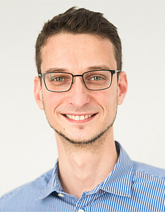
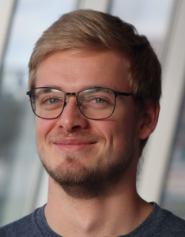
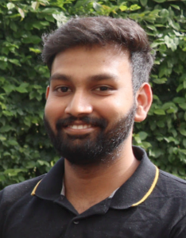
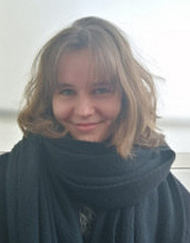

Lab Members
|  |
Prof. Dr. Martin Kircher Professor of Regulatory Genomics (UzL/UKSH) since January 2022 Group leader (BIH)since March 2017 
|
|
Dr. Max Schubach Co-lead Berlin office since January 2022 Postdoctoral Researcher (BIH)since July 2017
|
|
Dr. Arjun Devadas Vasanthakumari Postdoctoral Researcher (UzL/UKSH) IGVF project since January 2025
|
|
Dr. Nikola De Lange Staff Scientist (UzL/UKSH) since November 2024 |
|
Sebastian Röner Research scientist with Prof. Claudia Langenberg since September 2024 PhD candidate (HU IRTG 2403)since February 2019
|

|
Lusine Nazaretyan Research scientist (HEIBRIDS, DFG) PhD candidate (HU) since November 2020 Master's Thesis Student (TU Berlin)Apr-Oct 2020
|

|
Pyaree Mohan Dash Research scientist (DFG) PhD candidate (HU) since December 2021
|
|
Pia Keukeleire Research scientist (IGVF project) PhD student (UzL) since November 2022
|
|
Orazio Catona Research scientist (DFG) PhD student (UzL) since July 2023
|
|  |
Kilian Salomon Research scientist (BIH) PhD student (FU) since October 2023 |
|
Ali Hassan Research scientist (DFG) PhD student (UzL) in collaboration with Prof. Olaf Hiort since October 2024 Student Assistant (BIH)Dec 2023 - Sep 2024 |
|  |
Sudharsan Agas Chandra Prakash Research scientist (DFG) PhD student (UzL) in collaboration with Prof. Olaf Hiort since July 2024 |
|
Mustafa Helal Research scientist (UKSH) PhD student (UzL) since January 2025
|
|
Angelina Göbel-Knapp Student Assistant (UzL) Since June 2024 |
|
|
Cora Leifheit Student Assistant (BIH) Since October 2025 Bachelor Student (TH Brandenburg)Jun 2025 - Sep 2025 Student Intern (TH Brandenburg) Feb 2025 - May 2025 |
|  |
Kristin Köhler Guest and PhD student of Prof. Peter Robinson and Prof. Christian Conrad Student Assistant (BIH) Oct 2021 - Sep 2023 Student Intern (FU Berlin)Feb-Sep 2021 |
Former members
- Thorben Maaß, Postdoctoral Researcher (UzL/UKSH, January 2023 - September 2024)
- Anna Broschke, Master's Thesis Student (UzL, December 2023 - June 2024)
- Lea Burkard, Student intern and Master's Student (Uni Potsdam, April 2021 - April 2023)
- Theofilos Chalkiadakis, Research scientist (February 2022-January 2023)
- Philip Kleinert, Research scientist and PhD student (FU, April 2018 - September 2021, now at TMF e.V.)
- Philipp Rentzsch, Research scientist and PhD student (HU, April 2017 - March 2021, now at SciLifeLab Stockholm, Sweden)
- Dennis Müller, Student Intern and Bachelor's Thesis Student (TH Wildau, April - November 2022)
- Luisa Lekat, Intern Master's studies (Uni Lübeck, April - September 2022)
- Mert Akgül, Intern Master's studies (FU, June - August 2022)
- Kunaphas Kongkitimanon, Student Assistant (FU, October 2020 - March 2021)
- Louisa Krützfeldt, Master's Thesis Student (Uni Potsdam, October 2018 - October 2019)
- Anshupa Sahu, Intern (May 2017 - September 2017)